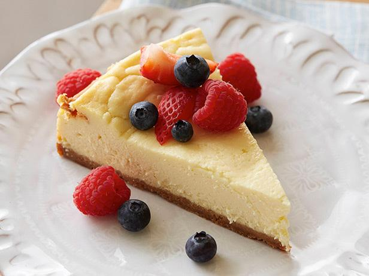

Cheesecake

Description
Cheesecake is a sweet dessert consisting of one or more layers. The main, and thickest, layer consists of a mixture of a soft, fresh cheese (typically cottage cheese, cream cheese or ricotta), eggs, and sugar. If there is a bottom layer, it most often consists of a crust or base made from crushed cookies (or digestive biscuits), graham crackers, pastry, or sometimes sponge cake.[1] Cheesecake may be baked or unbaked (and is usually refrigerated).
Cheesecake is usually sweetened with sugar and may be flavored in different ways. Vanilla, spices, lemon, chocolate, pumpkin, or other flavors may be added to the main cheese layer. Additional flavors and visual appeal may be added by topping the finished dessert with fruit, whipped cream, nuts, cookies, fruit sauce, chocolate syrup, or other ingredients.
Ingredients
Crust:
- 1 cup graham cracker crumbs
- 1/4 cup unsalted butter, melted
- 1 tablespoon sugar
Filling:
- 16 ounces cream cheese, at room temperature
- 2/3 cup sugar
- 1 cup sour cream
- 5 large eggs, room temperature
- 1 tablespoon vanilla extract
- 1/2 cup heavy cream
- Serving suggestion: Fresh or Marinated Berries, or Raspberry Sauce
Steps
- Position a rack in the middle of the oven and preheat to 350 degrees F.
- To make the crust: In a small bowl, mix the cracker crumbs with the melted butter and the sugar together until evenly moistened. Press the crumb mixture onto the bottom of a 9-inch springform pan. Bake the crust until golden brown, about 10 to 12 minutes. Cool the pan on a rack.
- Lower the oven temperature to 325 degrees F. In the bowl of a standing mixer fitted with the paddle attachment, or with a hand-held mixer, cream the cream cheese on medium speed until smooth. Gradually add the sugar and beat until light and fluffy. (Stop mixing and scrape down the sides of the bowl and beaters as needed.) Beat in the sour cream. Add the eggs, one at a time, beating well after each addition. Stir in the vanilla and cream. Pour the batter into the prepared pan.
- Bake until the top of the cheesecake is lightly browned, but the center still jiggles slightly, about 45 minutes. Cool the cake in the pan on a rack. Cover with plastic wrap and refrigerate overnight before serving.
- To remove the cake from the pan, run a knife or offset spatula around the edges to release the edges from the pan. Open the springform pan and remove the ring.
- Cut the cheesecake into wedges and serve with berries or a raspberry sauce if desired.